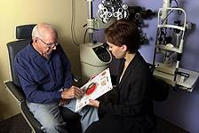

10 Steps to Prevent Vision Loss
March is Save Your Vision Month, a time to raise public awareness about how to protect your eyes and your vision. Most people aren’t aware that 75% of potential vision loss can be prevented or treated. This largely depends on patients being proactive and educated about their eye health.

Mar 19, 2015

Here are 10 important steps to protect and preserve your precious eyesight:
- Regularly have your eyes checked: For a number of eye diseases, early detection and treatment is critical to success in saving your vision. Many conditions - such as diabetic eye disease, age-related macular degeneration (AMD) and glaucoma - have minimal or no symptoms, particularly in the early stages. A comprehensive dilated eye exam is sometimes the only way to detect eye disease early enough to save your sight and prevent vision loss.
- Know your family history: A number of eye diseases involve genetic risk factors, including glaucoma, diabetic retinopathy and age-related macular degeneration (AMD). Be aware of the incidence of eye disease in your family and if you do have a family history make sure to be monitored regularly by a trusted eye doctor.
- Wear sunglasses: Exposure to UVA and UVB rays from sunlight is associated with a higher risk of AMD and cataracts. Wear sunglasses with 100% UV protection year round, any time you are outdoors. It’s worthwhile to invest in a pair of quality sunglasses which will have UV protection that lasts, as well as better glare protection and optics.
- Eat healthy: Diet plays a large role in eye health, especially certain nutrients such as antioxidants, zinc, omega-3 fatty acids and vitamins and minerals found in leafy green and orange vegetables. Keep your diet low in fat and sugar and high in nutrients and you can reduce your risk of developing AMD or diabetes, two of the leading causes of blindness.
- Stop smoking: Smokers are four times more likely to develop AMD.
- Wear eye protection: If you play sports, use power tools or work with dangerous equipment or chemicals, make sure to wear proper safety glasses or goggles to protect your eyes from injury. Never take risks as many permanent eye injuries happen within seconds.
- Manage diabetes: If you have diabetes or hyperglycemia, manage your blood sugar levels to reduce the risks of diabetic retinopathy.
- Limit alcohol intake: Heavy drinking is associated with higher risks of developing cataracts and AMD.
- Exercise: Yet another benefit of regular physical activity is eye health including reduced risk of AMD.
- Educate yourself: Below is some basic information about four of the most common vision impairing eye conditions.
4 Most Common Eye Conditions:
- Cataracts
Typically an age-related disease, cataracts cause a clouding of the lens of the eye which impairs vision. You can’t completely prevent this condition as more than half of individuals will develop a cataract by the time they are 70-80 years old. Cataract treatment involves a common surgical procedure that is one of the safest and most commonly performed medical procedures with a 98% success rate.
- AMD (age-related macular degeneration)
A progressive condition that attacks central vision, AMD usually affects individuals 50 and older. Disease progression may be slow and early symptoms minimal, making an eye exam critical in early detection. Risk factors include race (more common in Caucasians), family history, age, UV exposure, lack of exercise, smoking and poor diet and nutrition. AMD can cause irreversible vision loss. While there is no cure, the progression of the vision loss can be slowed or halted when caught early. Individuals often develop a condition called low-vision which is not complete blindness but does require a change in lifestyle to deal with limited eye sight.
- Glaucoma
Glaucoma is the 2nd leading cause of blindness worldwide, resulting from damage to the optic nerve most often caused by pressure build up in the eye. Vision loss is progressive and irreversible. Studies show that 50% of people with the disease don’t know they have it. While there is no cure, early detection and treatment can protect your eyes against serious vision loss and if caught early enough vision impairment could be close to zero. Risk factors include old age, diabetes, family history, ethnic groups (African Americans and Mexican Americans have higher risk factors), and previous eye injury.
- Diabetic retinopathy
The most common diabetic eye disease, this is a leading cause of blindness in adults which is caused by changes in the blood vessels of the retina. All people with diabetes both type 1 and type 2 are at risk, and the disease can often progress without symptoms, so regular eye exams are essential to prevent permanent vision loss. Regular eye exams and maintaining normal blood sugar levels are the best ways to protect vision.
The best way to protect your vision is to be informed, develop healthy habits and to get your eyes checked regularly. See you soon!
Ready to see clearly?
Book a comprehensive eye exam with Carey Brooks, OD in Frisco, TX.